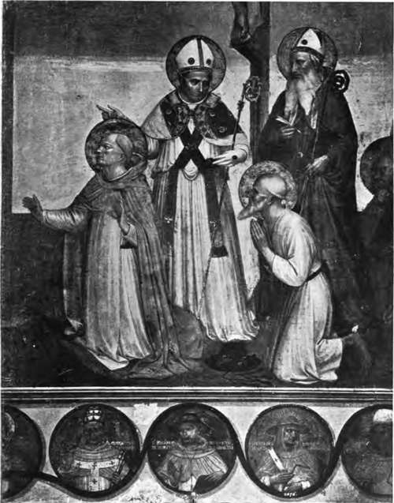

Fresco Painting
Description
This section is from the book "Mural Painting", by F. Hamilton Jackson. Also available from Amazon: Mural Painting: -1904.
Fresco Painting
The permanency of paintings executed "a fresco" depends upon the action of the carbonic acid in the atmosphere, which converts the lime of the mortar into carbonate of lime. The carbonic acid is driven out of the limestone or chalk by the process of burning, and when slaked the remaining lime is converted into a pulp of hydrate of lime. In this form it exists in the mortar and greedily absorbs the water with which the colours are applied. This water, with that already in the mortar, dissolves a portion of the hydrate of lime, and after a time this solution finds its way through the supervening layer of colour to the surface, where it absorbs carbonic acid gas from the atmosphere. It thus becomes carbonate of lime, and lies upon the surface in a thin crystallic film, protecting and securing it, so that it may be washed if not rubbed hard. Experiment has shown that the colour does not sink far into the surface. The pigment becomes saturated with the solution of hydrate of lime, which can only become carbonate of' lime on the surface, and if this surface be removed by scraping or dissolved away by an acid, or in some other way, the pigment gives way readily if rubbed with the finger, and still more with moisture. Frescoes sometimes peel off in flakes. This is caused by the different layers having been superposed at a sufficient. interval for the crystallic film to have been allowed to form between them, though if the Work is sufficiently rapid and well-judged for the layers not to interfere with each other, but at the same time to become equally saturated with the solution of lime a real process of cohesion takes place. The Rev. J. A. Rivington commenced his paper on Keim's process at the Society of Arts in 1884 with this excellent account of the chemistry of the fresco process, and I thought I could not do better than reproduce it here. Professor Church says that in air contaminated with the products of combustion of coal and gas true fresco soon perishes. "The carbonate of lime is converted into the sulphate, breaking up the paint and becoming itself disintegrated in the process of change. And the layer of paint itself may scale off from the production of sulphate of magnesia from the carbonate of magnesia in the plaster. ... If more binding material be required it may be introduced by means of lime-water, or even of baryta-water, which contains twenty times as much hydrate of baryta as the strongest lime-water contains hydrate of lime. In some plasters and with some pigments silicate of lime is produced, a more permanent binding material than the carbonate".
In this chemical union of pigment and lime the number of colours which can be used is necessarily limited, since all vegetable and animal pigments must be excluded, as they will be altered by caustic lime, and some even of the mineral colours, leaving for the most part only colours which are dull in tint. But this limitation of number and brilliancy is distinctly advantageous from the point of view of decoration, since it is almost impossible to produce a garish colour effect with them. The painters of the Renaissance produced any bright colours they desired by glazing with tempera after the work was dry, but any retouching is liable either to go black or perish in some other way, especially if exposed to weather or bad air. The medium employed by Munich artists for such retouching was vinegar and white of egg, and crayons made of pounded egg-shells and red chalk have also been used. The colours are chiefly simple earths, though there is said to be a method of rendering vermilion durable. The Munich list is as follows: White—lime which has been kept a long time. Yellow—all kinds of ochres and raw sienna. Reds—all kinds of burnt ochres, burnt sienna, oxides of iron, and lake-coloured burnt vitrioL Brows— umber raw and burnt, and burnt terre verte. Black —burnt cologne earth. Pueples—burnt vitriol, cobalt blue and lake-coloured burnt vitriol. Greens — verona green (terre verte), cobalt green, and chrome green. Blues—ultramarine, cobalt, and factitious ultramarine (the last does not always mix well). Mr. Armitage gives a much more restricted palette. " lime takes the place of white lead. The only yellow it is safe to use, at least in England, is raw sienna; probably, however, Mars yellow, which is derived from iron, might be used with safety. Light red of various kinds and burnt sienna are the principal reds. Oxide of chromium is the green. Raw and burnt umber are quite safe, as is also black. Blue is a difficult colour to use, and it is almost impossible to paint a blue sky properly gradated. Lakes and vegetable colours are to be strictly avoided." Paillot de Monta-bert says: "The earths employed should be marbles and stones as fai; as possible, so as to make a sort of coloured mortar when well ground." P. Pozzo says that Roman vitriol calcined in the oven is a good colour for fresco; tempered with brandy it makes a red purple very useful for sketching in drapery intended to be finished in vermilion. These two colours mixed make a colour as sparkling as the finest lake. The "light red of England," which, I suppose, means Indian red, is said to give almost the same colour as the vitriol, acquiring its proper colour as it dries. The receipt for preparing vermilion is quoted from M. Watelet: " Put it in powder into an earthen jar and throw on it lime-water taken at the moment of effervescence from quicklime thrown into it. Use the cleanest and clearest. Pour off this lime-water without stirring up the vermilion, and repeat the process several times. The vermilion should be purchased in lumps, since in powder it is often adulterated. . . . Burnt yellow ochre gives a pale red, and has the same good qualities as in its raw state. Mixed with the black earth of Venice it may be used for the shadows of carnations and for those of yellow draperies. Red chalk may also be employed. Umber is principally useful for the shadows of yellow draperies. Burnt it is excellent for strong shadows of carnations mixed with black earth of Venice. Enamel powder blues stand air and rain very well. They must be laid while the plaster is very fresh, and a second coat in an hour increases their brightness. It is strong enough for ordinary shadows; for strong shadows charcoal black should be added. Ultramarine is excellent, but too dear for frequent use. Of green terre verte of Verona is the best. Pozzo even says that it is the only one which can be used, the others being affected by lime. The black earth of Rome resembles that of Venice, and is generally used for black draperies. Black of charcoal and burnt wine lees may also be employed." Latilla, who was a member of the Society of British Artists, gives the following list, which scarcely agrees in all its details with his statement made just before, "that mineral, animal, and vegetable substances are destroyed quickly by the action of the lime." White—calcined marble or stone lime. Yellows—Naples yellow, yellow ochre, Roman ochre, brown ochre, raw sienna, and burnt sienna (!). Rids—Chinese vermilion, light red, Indian red, burnt copperas. Browns—raw umber, burnt umber, Vandyke brown, Cologne earth. Green—terre verte. Blues—ultramarine, ultramarine ash, French ultramarine, cobalt, royal smalt. Blacks—ivory black and charcoal. He says that smalts of various colours, as used for glass painting, are valuable (enamel colours apparently), and gives certain mixtures which he had found useful, such as—" For flesh tints use light red and lime, or vermilion and white. For high lights, burnt sienna, varied with Naples yellow or raw sienna. For greys, ultramarine ash and white. Black, Indian red, burnt sienna and white (mixed) make good shadows for flesh, as does also raw umber, when the subject is very large. Burnt umber possesses great depth in fresco, and is an excellent colour for the darker shadows. Draperies, if painted in black and white, may frequently have the lights glazed, which gives a fine effect".
Portion of the Great Crucifixion by Fra Angelico in the Chapter-House of S. Marco, Florence.
To face page 50.
Continue to: